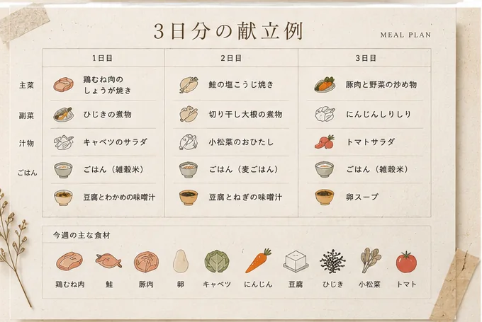
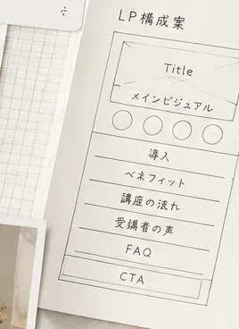

暮らしを整える
- 献立
- 情報整理
- 要約
- やること整理
CHATGPT BASIC CLASS
FOR ADULT BEGINNERS
40代・50代の主婦・個人事業主へ。
暮らしと仕事に使えるChatGPTの基礎を、実際の活用例から学ぶ講座です。
講座内容や参加方法を確認してから、ご自身に合うか判断できます。
BEFORE YOU START
何を入力すればよいか分からない
パソコン操作に自信がない
専門用語が多そうで不安
若い人向けに感じる
仕事にどう使うのか見えない
間違った使い方をしそうで心配
LEARN AT YOUR OWN PACE
自分の暮らしや仕事に合う使い方を、自分で考えられるようになること。
講座では、難しい仕組みの暗記よりも、質問の作り方、答えの確認方法、日々の場面で試す手順を大切にします。
AI IN DAILY LIFE

COURSE CONTENTS

HOW TO ASK
短い質問
案内文を書いて。
具体的な質問
40代・50代の初心者向けAI講座の案内文を、やさしく落ち着いた言葉で、300文字程度にまとめてください。
AFTER THE CLASS
FOR YOU
ABOUT THE INSTRUCTOR
講師名：未確認
2023年からAIを暮らしと仕事で活用。実際に使ってきた経験をもとに、初めての方にも分かりやすくお伝えします。
献立や日常生活での利用、情報収集や要約
メール、案内文、SNS投稿、講座資料、画像生成
商品・サービスの企画、ホームページやLP制作、業務効率化
HOW TO JOIN
移動せずに参加できます。使用ツールや必要端末は確認後に掲載します。
直接質問しながら学べます。開催地域、会場、持ち物は確認後に掲載します。
使用するオンラインツール：未確認
必要な端末：未確認
スマートフォンのみで参加可能か：未確認
開催地域：未確認
会場：未確認
持ち物：未確認
FREE INFORMATION SESSION
開催日：未確認
所要時間：未確認
開催方法：未確認
定員：未確認
申込みURL：未確認
PERSONAL CONSULTATION
所要時間：未確認
無料または有料：未確認
相談範囲：未確認
オンラインまたは対面：未確認
予約URL：未確認
STEP BY STEP
FAQ
はい。AIやChatGPTを初めて学ぶ方を想定し、画面の見方や質問の作り方から扱います。
操作に不安がある方にも分かるよう、専門用語を減らして進めます。必要な端末や準備物は公開前に確認して掲載します。
スマートフォンのみで参加できるかは未確認です。決まり次第、受講方法の欄に掲載します。
使用するオンラインツールは未確認です。説明会や講座案内で分かるように掲載予定です。
開催地域と会場は未確認です。確定後に受講方法の欄へ追加します。
講座料金は未確認です。架空の金額は掲載せず、確定後に追記します。
収益結果を約束する講座ではありません。暮らしや仕事の中で試し、判断できる基礎を学ぶ内容です。
申込み義務はありません。内容を確認したうえで、ご自身に合うか判断していただくための説明会です。